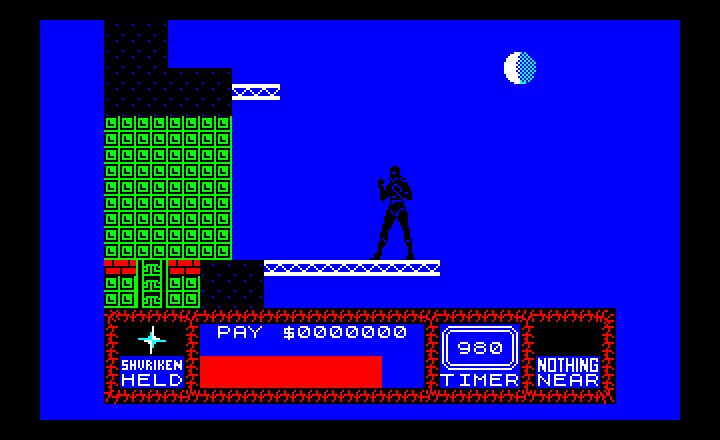
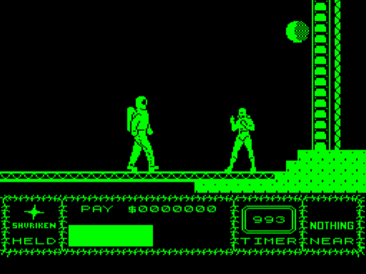
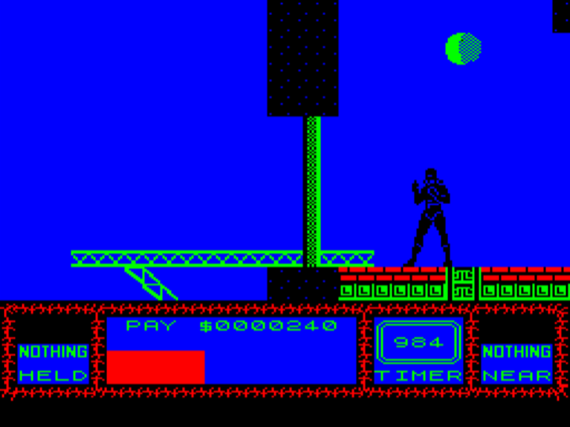
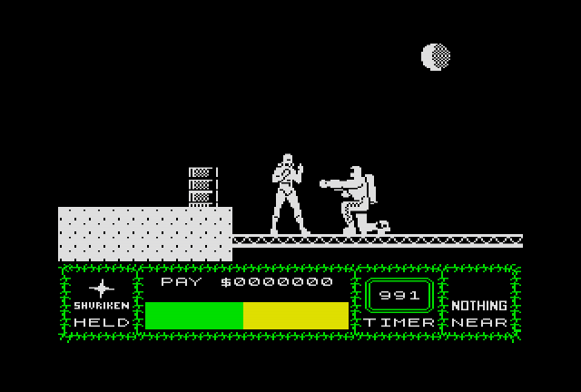

Saboteur 2 — игра, выпущенная в 1987 году для ZX Spectrum и других домашних компьютеров. Её разработал Clive Townsend, игра издана компанией Durell Software.
Оригинал на ZX Spectrum
Saboteur 2 на «Электроника МС 0515»
Порт Saboteur 2 для компьютера «Электроника МС 0515» был создан кем-то кто подписался как «LWOW SOFT». Вероятно, при портировании была дизассемблирована версия игры для ZX Spectrum, и затем код был по-командно переписан под систему команд PDP-11 и аппаратные особенности МС 0515. Именно эта версия стала основой для моего дальнейшего портирования Saboteur 2 на советские компьютеры УКНЦ и БК-0011М.
В конце августа — начале сентября 2024 года я восстановил полный дизасм этой игры, с разделением на код/данные. В результате был получен исходник, который компилируется в исполнимый файл, совпадающий с SABOT2.SAV, взятым с дисков от МС 0515.

Так выглядит Saboteur 2 на МС 0515 — в точности так же, как и
на ZX Spectrum
- github.com/nzeemin/ms0515-various/tree/main/SABOT2-DISASM – репозиторий кода с дизасмом игры
Портирование на БК-0011М (незакончено)
Первый шаг портирования: графика приспособлена под БК, при этом вместо тайлов 8x8 я использовал тайлы размером 8x10 — сделано это было для того чтобы учесть «неквадратность» пикселей на БК. При этом, игра стала чёрно-белой, потому что на ZX и МС 0515 цвет задаётся атрибутами, при портировании обработку атрибутов я просто отбрасывал.

Saboteur 2 на БК-0011М после первого шага портирования.
Второй шаг портирования: переработал код отрисовки, перейдя от байт к словам, в результате получилась цветная версия.
Третий шаг: ускорение цикла отрисовки.
В текущей версии базовая играбельность достигнута, но ещё нужно работать над скоростью игры, а также улучшать управление с клавиатуры.

Saboteur 2 на БК-0011М
- github.com/nzeemin/bk0011m-saboteur2 – репозиторий кода
Портирование на УКНЦ (незакончено)
Текущая версия игры — чёрно-белая, с цветной индикаторной панелью. Производительность вполне достаточная. Управление с клавиатуры неудобное, требует доделки. Нет звуковых эффектов.

Saboteur 2 на УКНЦ
- github.com/nzeemin/uknc-saboteur2 – репозиторий кода